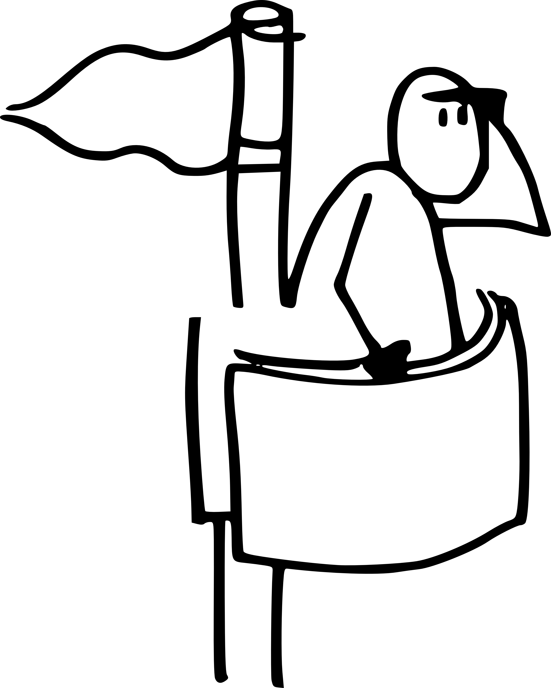

Volet économique¶
Cette section pose un modèle économique indicatif, pas un business plan. L'idée est de vérifier qu'avec les hypothèses qu'on tient (1 300 € de loyer pour le bâtiment principal et le pavillon, ouverture journée et soirée du mardi au samedi, 2 ou 3 concerts pros par mois autour de 800 € de cachets, popote végétarienne du midi à prix libre préparée par des bénévoles, 100 % de bénévolat hors musiciens), le projet tient à l'équilibre. Les chiffres ci-dessous sont des moyennes mensuelles, à affiner en juin avec les autres structures et à ajuster cycle après cycle une fois le bar ouvert.
Calendrier d'ouverture¶
Le bar ouvre cinq jours sur sept, du mardi au samedi, de 10h jusqu'au soir. Dimanche et lundi fermés. L'amplitude journée est rendue possible par l'installation des bureaux de Code Commun dans le bâtiment principal : il y a déjà du monde sur place, autant ouvrir le comptoir.
Journée (10h à 18h). Service de cafés, thés, boissons fraîches pour les personnes qui viennent utiliser le lieu, travailler, lire, se retrouver. Comptoir tenu par les bénévoles de l'Université Populaire et les permanents de Code Commun, sans coût salarial supplémentaire. Le bar fonctionne en mode calme, sans animation programmée : on lit, on bosse, on discute.
Midi (12h à 14h). Grosse popote commune à prix libre sur le modèle Cascade. De 10 à 20 couverts par jour, plat unique végétarien (ce qui simplifie la logistique, réduit le coût matière et tient une cohérence écologique du lieu), fait sur place dans la cuisine de La Filature. La préparation est portée par des bénévoles : des personnes des structures porteuses, des résident·es de La Filature qui ont envie de cuisiner, et des passages ponctuels (cuisinier·es d'un soir, jeunes en service civique d'autres assos, etc.). L'objectif n'est pas de dégager une marge : les recettes du midi couvrent les matières premières, et le faible reliquat éventuel rejoint le pot commun du bar. Une popote végé à prix libre est aussi un seuil bas pour qui ne fréquenterait pas spontanément le lieu.
Soirs de semaine (mardi, mercredi, jeudi). Ouverture régulière avec une programmation musicale amateure : scènes ouvertes, open mic, théâtre d'impro, ateliers découverte. Une vingtaine à une trentaine de personnes qui passent et consomment. On continue la programmation du lieu existante.
Vendredis et samedis. On monte la voilure : programmation amateure de qualité ou groupes invités du réseau, une centaine de personnes en soirée normale. Une à deux fois par mois, le pavillon en bois accueille un concert pro avec billetterie accessible produit par Code Commun, avec un cachet d'intermittence autour de 800 €, jauge autour de 200 à 300 personnes.
Recettes mensuelles¶
Le panier moyen tient compte du seuil bas qu'on revendique : pas de menu à vingt-cinq euros, le snack du soir reste entre 4 et 10 €, le café à 1 €, la popote du midi à prix libre. Les chiffres ci-dessous prennent une fourchette prudente, calibrée sur les retours d'autres cafés associatifs du réseau (voir notamment les besoins remontés par le Réseau des Épiceries, Cafés Culturels et Cantines en Associatif).
Journée café (mardi à samedi, 10h-18h, soit 20 jours par mois). Une quinzaine de boissons servies par jour en moyenne, à 1,20 € de panier moyen (le café est à 1 €, le thé, le sirop ou le jus tirent un peu vers le haut). Total environ 360 € sur le mois. Ce n'est pas la rentrée principale, mais c'est une présence quotidienne qui ouvre le lieu sans coût supplémentaire.
Midi popote végé à prix libre (mardi à samedi, 20 midis par mois). De 10 à 20 couverts par jour, prix libre conseillé autour de 6 €. On compte sur 15 personnes en moyenne à 6 € de contribution. Total environ 1 800 € sur le mois. Ces recettes ne sont pas un bénéfice : elles couvrent les matières premières, et le faible reliquat éventuel rejoint le pot commun du bar.
Soirs de semaine (mardi, mercredi, jeudi, soit douze soirs par mois). 25 personnes en moyenne, 7 € de panier moyen. Total environ 2 100 € sur le mois.
Vendredis et samedis hors concert pro (6 à 7 soirs par mois). 90 personnes en moyenne, 9 € de panier moyen. Total environ 4 900 € sur le mois.
Concerts pros (en moyenne un et demi par mois, en remplacement d'un vendredi ou samedi) : 230 personnes en moyenne, 9 € de consommation au bar et 10 € de billet d'entrée. Total environ 3 100 € de bar et 3 450 € de billetterie sur le mois.
Total des recettes mensuelles : environ 15 710 €, dont 360 € de café journée, 1 800 € de popote midi, 10 100 € de bar du soir et 3 450 € de billetterie.
Charges mensuelles¶
Loyer charges comprises de La Filature : 1 300 €, dont 1 000 € pour le bâtiment principal (bureaux Code Commun, café, salle attenante, cuisine) et 300 € pour le pavillon en bois où se déroulent les concerts.
Cachets d'intermittence pour les concerts pros : 2 à 3 cachets par mois à 800 €, soit en moyenne 2 000 €. Les musiciens sont les seules personnes rémunérées sur l'activité du bar. Tout le reste (service, programmation amateure, cuisine du midi, régie, ménage, coordination) tient en 100 % bénévolat, ce qui n'a pas à être valorisé comptablement (voir la position du HCVA d'avril 2024 sur la non-obligation de valorisation du bénévolat).
Achats marchandises bar (boissons, snack journée et soir) : la marge brute typique d'un bar associatif tourne autour de 65 à 70 %. Sur 10 460 € de recettes bar (360 € journée + 10 100 € soir), on table sur 3 150 € d'achats.
Matières premières popote (légumes, légumineuses, céréales, condiments) : la popote étant végétarienne, le coût matière est plus bas qu'avec viande ou poisson. On table sur environ 55 à 60 % des recettes du midi, en privilégiant les achats locaux et le circuit court. Sur 1 800 € de recettes popote, environ 1 050 € de matières premières.
Charges courantes (énergie, eau, internet, assurance responsabilité civile, déchets, petites fournitures, sanitaires) : environ 800 €. L'amplitude journée et le fonctionnement cuisine montent légèrement la consommation par rapport à un bar de soirée uniquement.
Taxes spectacles et droits d'auteur : la billetterie des concerts pros déclenche trois obligations distinctes. Taxe CNM de 3,5 % sur la recette billetterie hors taxes (source CNM), TVA à 5,5 % sur les billets (source ARTCENA), droits SACEM environ 8 % du brut billetterie pour les spectacles musicaux avec entrée payante. Sur 3 450 € de billetterie mensuelle, l'ensemble représente environ 400 €. La conformité SIBIL (déclaration trimestrielle des billets vendus au Ministère de la Culture) est gérée automatiquement par TiBillet.
Total des charges mensuelles : environ 8 700 €.
Le solde¶
15 710 € de recettes moins 8 700 € de charges donnent environ 7 010 € de marge mensuelle sur un mois moyen. C'est large, et c'est volontaire. Le modèle est construit pour absorber les mois creux (vacances scolaires, été précoce, intempérie), les mois où la programmation ne marche pas comme prévu, et les coûts qu'on n'a pas vus venir (matériel à remplacer, formation à payer, équipement de cuisine à compléter, frais de mutualisation avec d'autres résident·es de La Filature).
Ce surplus n'est pas une marge bénéficiaire pour les structures porteuses. Il est mis en commun via la mécanique du modèle Cascade : il alimente les chantiers moins rentables du lieu (conférences, arpentages, ateliers parentalité de Mathilde), il finance les outils qu'on souhaite acquérir au fur et à mesure, et il constitue une réserve pour terminer proprement le projet à l'été 2027.
Sensibilité¶
Si la fréquentation est inférieure de 20 % à l'hypothèse sur tous les temps d'activité, les recettes tombent à environ 12 570 € et les achats baissent proportionnellement (bar à 2 520 €, popote à 840 €). Charges totales 7 860 €. Solde : 4 710 € par mois. On reste largement à l'équilibre.
Si elle est inférieure de 40 %, les recettes tombent à environ 9 425 € et les charges à 7 220 €. Solde : 2 205 € par mois. C'est encore tenable.
Le point de rupture (recettes égales aux charges) se situe autour d'une fréquentation inférieure de 55 % aux hypothèses, soit moins de 7 boissons servies dans la journée, moins de 7 couverts au midi, une dizaine de personnes en semaine et une quarantaine le week-end. C'est très bas. Pour tomber en dessous, il faudrait soit un échec massif d'attractivité (peu probable vu le réseau mobilisé), soit une crise sanitaire ou un incident majeur. Dans ces cas-là, le modèle s'ajuste en cycle : baisse de la voilure de programmation, recentrage sur le bar, mobilisation du fonds de réserve Code Commun.
Tableau récap'¶
Vue synthétique du modèle pour un mois moyen. Les chiffres ne sont pas additionnables tels quels avec ceux de la cuisine d'insertion (Des Saveurs et des Ailes par exemple), qui suit son propre circuit économique sans prélèvement par le bar.
Recettes¶
Café journée (10h-18h, 20 jours/mois) : 360 €
Popote midi végé à prix libre (20 midis/mois) : 1 800 €
Soirs de semaine, programmation amateure (12 soirs/mois) : 2 100 €
Vendredis/samedis hors concert pro (6 à 7 soirs/mois) : 4 900 €
Concerts pros, bar (1,5 concert/mois) : 3 100 €
Concerts pros, billetterie (1,5 concert/mois) : 3 450 €
Total recettes : 15 710 €
Charges¶
Loyer bâtiment principal + pavillon (1 000 + 300) : 1 300 €
Cachets intermittence concerts (2 à 3 / mois) : 2 000 €
Achats marchandises bar (journée + soir) : 3 150 €
Matières premières popote végé : 1 050 €
Charges courantes (énergie, eau, internet, assurance, déchets) : 800 €
Taxes spectacles, SACEM, TVA billetterie : 400 €
Total charges : 8 700 €
Solde¶
Marge mensuelle moyenne : 7 010 €, redistribuée via le modèle Cascade vers les chantiers non rentables (conférences, arpentages, ateliers parentalité), les outils, et la réserve de fin de projet.
Ce que ce modèle n'est pas¶
Pas un business plan engageant. Le projet n'a pas vocation à dégager du bénéfice. Toute mise en commun, toute redistribution, toute prise de décision sur les recettes passe par l'assemblée des structures porteuses, pas par un comité de direction. Le surplus existe pour être réutilisé collectivement, pas pour être capté.
Pas une promesse. Les hypothèses ci-dessus sont raisonnables, mais elles restent des hypothèses. Le projet ouvre en août 2026 et la vraie économie sera celle des trois premiers mois d'activité. Les chiffres seront publiés régulièrement, le budget sera traçable en temps réel grâce aux outils TiBillet, et le modèle Cascade sera notre outil quotidien d'ajustement.
Pas un horizon de pérennité. Le projet est court : un an, août 2026 à été 2027. L'équilibre vise à tenir l'année, à laisser une trace documentée et à rendre les clés en bon état à la fin de l'occupation de La Filature. Pas à durer pour durer.
Sources et références¶
Taxes et obligations billetterie : Centre National de la Musique (CNM) pour la taxe spectacles 3,5 %, ARTCENA pour la TVA spectacles 5,5 %, SIBIL du Ministère de la Culture pour la déclaration trimestrielle des billets.
Statut du bénévolat : Haut Conseil à la Vie Associative (HCVA), avis du 18 avril 2024, qui défend l'absence d'obligation de valorisation comptable du bénévolat associatif.
Modèle économique non-lucratif : Cascade.coop, dont les principes (contribution, redistribution, cycles) inspirent directement notre approche. Voir notre page Le modèle Cascade pour le détail.
Référents métier sur les cafés associatifs : Réseau des Épiceries, Cafés Culturels et Cantines en Associatif, avec qui Code Commun travaille sur un commun numérique de gestion. Les retours de structures comme La Caravane des possibles (Villefontaine) ou L'abrixbar (Vallabrix) calibrent nos ordres de grandeur de panier moyen et de besoins opérationnels.